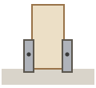

FISA 1 / 11
Stalpii in papuci
ST stalpGR grindaJO joistaDL dusumeaPO politaC1/C2 coltarCF diagonala
Piese pentru aceasta etapa

ST4
Stalp KVH 100x100
la lungime mare, NU taia

PAP4
Papuc reazem U
deja in beton

B28
Bulon M12x120
2 / stalp

PT~6
Proptea temporara
proptele
Scule
Cheie 19 (M12)BolobocBormasina2 persoane
Pas cu pas
cap surub (fata vazuta)surub/piulita ascuns (pe spate)directia de insurubareoblic = la unghi (toe-screw)
Folosim suruburi + buloane, nu cuie. (Singurul cui e distantierul de 5 mm la dusumea.)
1
Aseaza toti 4 stalpii in papucii lor din beton, coborati drept in U. TOTI raman lungi acum — fata o tai la Fisa 2.
2
Adu fiecare stalp perfect vertical (la plumb), verificat pe doua fete cu bolobocul.
3
Sprijina fiecare stalp cu 2 proptele la baza. La cei 2 stalpi inalti din spate, pune si cate o proptea spre varf.
!
CRITIC — Verifica fiecare stalp la plumb pe 2 fete inainte de a strange proptelele.
4
Prinde suruburile B2 in papuc DOAR slab (2 / stalp) — sa poti inca corecta. Le strangi la Fisa 2.
zoom · cum se prinde
Gata cand
- Toti 4 stalpii verticali pe 2 fete
- Proptele la fiecare stalp
- Suruburi inca slabe